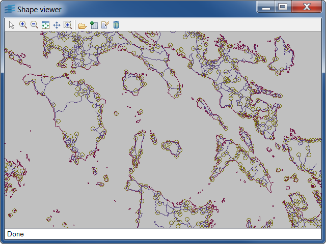

shapeviewerThis sample shows how to load Shapefile data.
Moreover, it allows you
to load on demand a Shapefile thanks to an Rogue Wave Views Maps .idx index
file that it can generate. For the load-on-demand, the .shx index
file is mandatory.
Geometries are read from the .SHP file, while feature attributes are read from the .DBF file, when this file exists. In this demo, when clicking on graphics elements like line, markers, and so on, will display the attached attributes, if any.
: Activates the tooltip interactor allowing you to
show the attributes of a geometry (if any) by clicking it.
: Loads an ESRI .shp Shapefile. If there is
a .dbf attribute file associated, then it is loaded automatically.
: Loads a Shapefile on demand. This needs an Rogue Wave Views Maps
.idx index file and an ESRI .shx index file.
: Creates a new Rogue Wave Views Maps .idx index file
for load-on-demand.
: Empties the manager.
Note: This sample uses a default adapter with a precision of 0.001. This means that the precision of a manager for coordinates in degrees is 0.001 degrees, but 0.001 meters for coordinates specified in meters. You can change this projection by specifying a '-a n' parameter, where n is the precision you want. Typically, you should use a precision greater than 0.1 meters for coordinates specified in meters (below this precision, if you have to represent the whole world, the manager coordinate of your objects will be in an overflow state.)
IlvShapeFileReaderIlvShapeSHPReaderIlvShapeDBFReaderIlvShapeFileTileLoaderIlvShapeFileTiler